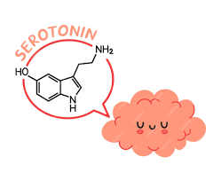

Voltar
Voltar


O que é serotonina e quais são suas funções/benefícios?
A serotonina é um mensageiro químico que desempenha um papel vital na regulação do humor, sono, digestão e outros processos fisiológicos. Muitas vezes é chamada de "hormônio da felicidade" devido à sua associação com sentimentos positivos.
Funções da serotonina:
- Regula o humor e o bem-estar
- Promove sentimentos de felicidade e contentamento
- Ajuda na regulação do sono
- Desempenha um papel no apetite e na digestão
- Contribui para a aprendizagem e a memória
- Influencia a densidade óssea
- Está envolvida na cicatrização de feridas
Quais são os sintomas da deficiência de serotonina?
- Depressão e ansiedade
- Mudanças de humor e irritabilidade
- Fadiga e baixa energia
- Dificuldade para dormir
- Mudanças no apetite
- Problemas digestivos
- Dificuldade de concentração
O que estimula a produção de serotonina?
- Exposição à luz solar: A luz solar estimula a produção de vitamina D, essencial para a síntese de serotonina.
- Exercício: A atividade física regular aumenta os níveis de serotonina.
- Dieta: Comer alimentos ricos em triptofano, um aminoácido necessário para a produção de serotonina, pode ser útil. Exemplos incluem peru, ovos, espinafre e banana.
- Probióticos: Certos probióticos podem impactar positivamente os níveis de serotonina.
- Técnicas de relaxamento: Práticas como meditação e yoga podem ajudar a reduzir o estresse e promover a produção de serotonina.
O que desencoraja a produção de serotonina?
- Estresse crônico: Hormônios do estresse, como o cortisol, podem inibir a produção de serotonina.
- Falta de sono: A má qualidade do sono pode interromper a regulação da serotonina.
- Dieta não saudável: Uma dieta rica em alimentos processados e açúcar pode contribuir para baixos níveis de serotonina.
- Uso excessivo de álcool e drogas: O álcool e as drogas podem interferir na produção e função da serotonina.
- Certos medicamentos: Alguns medicamentos, como antidepressivos, podem afetar os níveis de serotonina.
Conclusão
A serotonina desempenha um papel crucial na manutenção da boa saúde mental e física. Ao incorporar hábitos saudáveis de vida, podemos apoiar o nível ideal de serotonina e experimentar seus muitos benefícios.
Fórmula Química:
C17H19NO3
Fórmula Estrutural:
 (1).png)